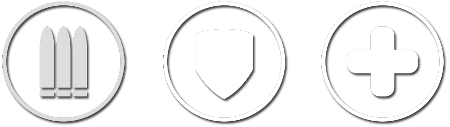

The Three Different Classes

DPS, Tank, Support
Overwatch is a team game - with each team consisting of six players. Each hero can be separated into three different categories; DPS (Offense/Defense), Tank, and Support. DPS (Damage Per Second) heroes have low health and high damage output, Tank heroes can use barriers to defend their team and have high health/low damage, and Support heroes have low damage and health but heal your team’s health.
Team Composition
The standard team composition is two DPS heroes, two tanks, and two support heroes. (2-2-2) This is the composition used by the professional players at the highest skill level in the game. This composition has proved to be the most ideal throughout the two years of Overwatch’s existence.
The Heroes
Beginner Heroes
Mercy [Support]

Mercy is a support, who targets one teammate and heals them. She can fly to teammates, and can ressurect one teammate every thirty seconds. Her abilities are pretty straight forward, and her healing beam doesn't require perfect aim.
More Information
Soldier: 76 [DPS]

Soldier: 76 is a DPS hero who has a very standard set of abilities. He can sprint, shoot a high damage rocket, and heal himself. His easy-to-understand kit makes him perfect for beginning players to pick him up. He even has an ability that auto-aims for you!
More Information